La mission de Xebia est de développer du logiciel de très haute qualité (Software Develoment Done Right).
L'ambition de notre équipe agile est de changer, dans le paysage de l’IT en France, les pratiques peu
efficaces et une culture tayloriste du développement logiciel.
Nous vous proposons une offre
d'accompagnement riche et complète, depuis l'idée jusqu'à la production. Notre offre vous permettra de tirer
le meilleur de vos équipes en les associant étroitement à notre démarche.
Nous partageons également
généreusement notre savoir-faire au travers de notre blog, de publications, ou participations aux
conférences.
Nos missions types
Vague d'Accompagnement Scrum

Vague d'Accompagnement Kanban

Analyse de maturité Agile
Sauvetage Projet
Lean Startup MVP
TMA Agile
Transformation Agile
Centre Agile
Nos Clients
Nos profils
Le Coach agile
Le Coach agile
L’agilité fait partie de l’ADN de Xebia.
Agilistes depuis de nombreuses années, nos coachs sauront vous accompagner pour vos projets ou
transformations et vous guider vers la méthodologie correspondant le mieux à votre besoin.
Profil type
Plus de 10 années d’expérience
Plus de 5 années d’expérience des pratiques agiles
Connaissance du monde IT
Expériences significatives dans la gestion et/ou la direction de projet
Expertise
Kanban
Scrum
Résolution de problèmes
Charisme
Rigueur
Sens de l’écoute
Le Product Owner
Le Product Owner
Le Product Owner représente les utilisateurs et les parties prenantes au sein de l’équipe. Capable
d’exprimer simplement les fonctionnalités, de prioriser les tâches et de prendre les décisions à
temps, nos product owners sauront être mes garants de produits qui apportent de la valeur à vos
utilisateurs.
Profil type
Plus de 5 années d’expérience
Compréhension du monde IT
Expertise
Rédaction de users stories
Backlog grooming
Animation d’ateliers de priorisation avec les parties prenantes
Charisme
Rigueur
Le Scrum Master
Le Scrum Master
Le Scrum Master est le garant du processus au sein de l’équipe.
Nos Scrum Master pratiquent l’agilité au quotidien et sauront l’adapter à votre entreprise.
Véritables facilitateurs, ils aideront l’équipe à s’améliorer dans sa pratique de Scrum mais aussi à
surperformer (innover au quotidien, prise d’initiatives... ).
Profil type
Scrum Master d’une équipe projet
Scrum de Scrum
Expertise
Méthodologies
Scrum
Animation de rétrospectives
Résolution de problèmes
Charisme
Sens de l’écoute
Forte connaissances techniques
Le DevOps
Le DevOps
Le DevOps doit par son expertise fluidifier les relations de travail entre les dev et les ops.
Nos consultants DevOps sont en fait des binômes constitués d’un coach agile et d'un techlead. Ils
interviendront conjointement durant la mission pour identifier les axes d’amélioration, animer des
ateliers, mais également identifier et mettre en oeuvre des solutions techniques.
Cette offre s’adresse aux équipes débutantes ou peu expérimentées en agile. S’appuyant sur nos formations et
notre expérience accumulée depuis de nombreuses années, notre ambition est de vous donner toutes les armes
pour remplir un triple objectif : fournir un produit de grande qualité, en respectant des contraintes
fortes, et en atteignant un niveau de maturité agile satisfaisant.
Notre intervention
Formation de l’équipe et des parties prenantes : Scrum, management visuel, User Stories
Création du backlog produit à l’aide de Story Mapping et Customer Experience Mapping
Coordination du sprint 0 : Management visuel, environnement de travail, team building
Animation des cérémonies Scrum par le coach puis transfert de compétence progressif
Observation sur 2 sprints et recadrage des pratiques le cas échéant
Nos livrables
Diagnostique de maturité au démarrage, à mi-chemin, et à la fin du coaching
Questionnaire de satisfaction équipe et bilan du coaching
Vague d'accompagnement Kanban
Augmentez la transparence et la fluidité de vos projets
Cette offre s’adresse aux équipes débutantes ou peu expérimentées en agile. S’appuyant sur nos formations et
notre expérience accumulée depuis de nombreuses années, notre ambition est de vous donner toutes les armes
pour remplir un triple objectif : fournir un produit de grande qualité, en respectant des contraintes
fortes, et en atteignant un niveau de maturité agile satisfaisant.
Notre intervention
Formation de l’équipe et des parties prenantes : Kanban, User Stories
Définition des releases avec le Story Mapping
Définition des éléments de travail et des flux
Mise en place du management visuel : cockpit d’équipe, calendriers, indicateurs
Apprentissage de la gestion des limites
Support au traitement des obstacles, animation des katas de résolution de problème
Revue du flux et adaptation de la cadence du projet
Nos livrables
Cockpit d’équipes
Indicateurs de prédictibilité
Matrices de maturité
Questionnaire de satisfaction équipe et bilan du coaching
Analyse de la maturité agile
Pour se fixer des objectifs, il faut savoir d’où l’on part
Vous souhaitez vous situer par rapport aux pratiques agiles, voire au marché. Dans le cadre de l’analyse de
la maturité, nos coachs identifient vos points forts mais également vos axes d’améliorations pour assurer
une agilité durable et efficace dans votre organisation.
Notre intervention
Entretiens avec les équipes
Observation des cérémonies
Inspection des livrables
Animation d’ateliers pour recueil de contexte
Nos livrables
Restitution et recommandations
Mise à disposition de cas client
Plan d’action
Sauvetage projet
Aux grands maux, les grands remèdes
La situation est difficile, voire critique. Votre projet a déjà raté plusieurs jalons et les relations avec
le sponsor sont tendues. Vous avez perdu le contrôle du planning et personne n’arrive à prédire une date de
fin crédible. Notre offre de conseil se base sur une thérapie de choc dans laquelle nous adoptons une
approche directive et parfois intrusive pour donner des résultats rapides.
Notre intervention
Etat des lieux du projet, qu’il soit en V ou Agile : revue des engagements, des rôles, des
environnements, des livrables
Evaluation de la maturité des rôles clés
Revue complète du backlog de produit et restructuration le cas échéant
Mise en place d’un flux de travail simple et stricte limitation de l’encours
Collecte des indicateurs de prédictibilité et extrapolation des dates d’atterrissages
Modification des environnements de travail pour permettre une collaboration optimale
Aide à la négociation du contenu des releases avec les donneurs d’ordres
Escalade des obstacles et support à la résolution de problèmes
Nos livrables
Synthèse de l’état des lieux
Indicateurs de prédictibilité
Rapports de résolution de problème A3
Lean Start Up MVP
La création d’un produit commence bien avant son développement
La création d’un nouveau produit ou service est une étape passionnante mais également risquée. Comment être
en effet sûr de sa pertinence vis à vis de ses futurs utilisateurs ? Quelles sont les fonctionnalités à
mettre en avant ? Quelles sont celles qui feront de votre produit un incontournable ? Notre offre Lean Start
Up MVP s’appuie sur un travail itératif et incrémental dans la découverte du besoin pour identifier les
fonctionnalités de votre futur produit, mais surtout pour lui donner une vision et un sens auprès des
utilisateurs.
Notre intervention
Définition de la vision, de la proposition de valeur et des KPI de succès
Obtenir la liste des fonctionnalités du produit
Estimation et coût de la version 1
Développement du minimum viable
Nos livrables
Synthèse du Business Case
Liste des fonctionnalités (Backlog de produit) MVP (Minimum Viable Product)
Plan de release
TMA Agile
L’activité de maintenance applicative est un candidat naturel à une démarche Agile
Les équipes de TMA sont engagées contractuellement à assurer un niveau de service strict sur différentes
natures de travaux : correction d’anomalies, petites évolutions, maintien en condition opérationnelle. Les
maintenances se prêtent mal à un cadre itératif tel que proposé par Scrum. Kanban est le système idéal pour
structurer le travail et répondre aux situations évoluant rapidement.
Notre intervention
Formation des équipes au Kanban
Analyse des travaux et définition des classes de service
Mise en place du système Kanban et des SLA des classes de service
Mise en place des indicateurs Kanban, vecteurs de transparence, d’engagement et de rythme soutenable
Nos livrables
Cockpit d’équipe
Indicateurs de suivi
Guide Kanban
Transformation Agile
Intégrer l’agilité à l’ensemble de votre organisation
Passer d’une réussite sur un projet pilote à un mode de fonctionnement maîtrisé et reproductible nécessite
un travail de longue haleine. La transformation d’une organisation vers un mode agile ne s’improvise pas… La
réussite de cette transformation dépend de la capacité de l’organisation à ancrer l’agilité dans la durée et
de se questionner sur ses pratiques existantes. Nous vous proposons de vous accompagner avec une démarche
basée sur 3 axes : conduite du changement, coaching opérationnel des équipes, transfert de compétences.
Notre intervention
Définition des motivations et des KPI de transformation
Formalisation du processus agile et de la gouvernance agile
Organisation et animation de la communauté agile
Sensibilisation aux méthodes agiles de tous les acteurs : management, métiers...
Support aux projets
Identification et coaching des relais internes
Nos livrables
Plan d’accompagnement du changement
Guides de mise en oeuvre
Fiche de synthèse des projets coachés
Projet pilote opérationnel sur Agile
Centre Agile
Pérenniser l’agilité avec une structure dédiée
La transformation d’une organisation importante nécessite une attention accrue et un coaching d’envergure.
Cette offre de coaching est destinée aux organisations gérant un portefeuille important de projets (80+) et
souhaitant une économie d’échelle et une cohérence forte dans leur transformation agile. Nous vous aidons à
réaliser toutes les étapes nécessaires à la construction d’un centre agile.
Notre intervention
Définition de la vision et des moyens du centre agile
Revue du portefeuille de projets et des critères d’éligibilité au coaching